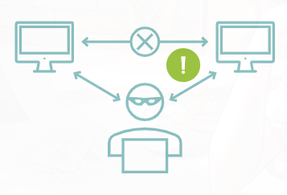

39. Types of Threats
Spoofing
Spoofing is pretending to be a trusted identity to gain access. It can involve fake IP addresses, MAC addresses, usernames, email addresses, or other identifiers.
Phishing
Phishing tricks users into going to malicious websites or revealing information, usually through deceptive emails, links, or messages.
DoS / DDoS
A Denial-of-Service (DoS) attack tries to make a system unavailable by overwhelming it.
A Distributed Denial-of-Service (DDoS) attack does the same thing using many systems at once.
Virus
A virus is malicious code that attaches to files or programs and spreads, usually with user action such as opening a file or clicking a link.
Worm
A worm is malicious code that spreads by itself across systems or networks without needing user action.
Trojan
A Trojan is malicious software disguised as something legitimate. It appears harmless but carries a harmful hidden function.
On-Path Attack
It's man-in-the-middle (MITM), but also called as on-path attack (for some reason) happens when an attacker places themselves between two communicating systems to intercept or alter data.

Side-Channel Attack
A side-channel attack gathers information by observing how a system operates, such as timing, power use, or other indirect signals.
Advanced Persistent Threat (APT)
An APT is a long-term, targeted attack carried out with high skill and planning, often by organized attackers.
Insider Threat
An insider threat comes from a trusted person inside the organization. It can be intentional or unintentional.
Malware
Malware is malicious software designed to harm systems, steal data, disrupt operations, or compromise security.
Ransomware
Ransomware is malware that locks or encrypts data and demands payment to restore access.
Main Idea
Cyber threats include deception, service disruption, malware, interception, and insider misuse, all of which can damage systems, data, or operations.